시작하기
설치
맥(Apple Silicon·인텔)과 윈도우 10·11 (64비트)에서 돌아갑니다.
- 맥 — 내려받기에서 .dmg를 받아 열고, HyperSeven CAD 를 응용 프로그램 폴더로 끌어 놓습니다. 인텔 맥은 다운로드 단추 아래의 인텔 맥용을 받습니다.
- 윈도우 — 윈도우용 다운로드를 누르면 Microsoft Store에서 설치합니다. 그 아래 파일로 받기 (.zip)로 받으면 압축을 풀고 supercad.exe 를 엽니다.
처음 열 때
맥에서 인터넷에서 받은 앱을 열지 묻는 창이 나오면 열기를 누릅니다. 윈도우에서 .zip으로 받은 앱을 처음 열 때 “Windows의 PC 보호” 창이 뜨면 추가 정보 → 실행을 누릅니다.
처음 열면 시작 화면이 무엇을 하시나요? 하나를 묻습니다. 2D 도면, 3D 모델, 곡면 모델, 건축 설계, 처음입니다 가운데 고르면 작업 공간·도구·단축키가 함께 맞춰지고, 그 일의 시작 셋(새 문서 · 예제 하나 · 받은 파일 열기)이 위에 놓입니다. 나머지 시작은 그 아래 다른 시작에 있고, 다시 선택으로 답을 바꿉니다. 나중에를 누르면 3D 모델링으로 시작합니다.
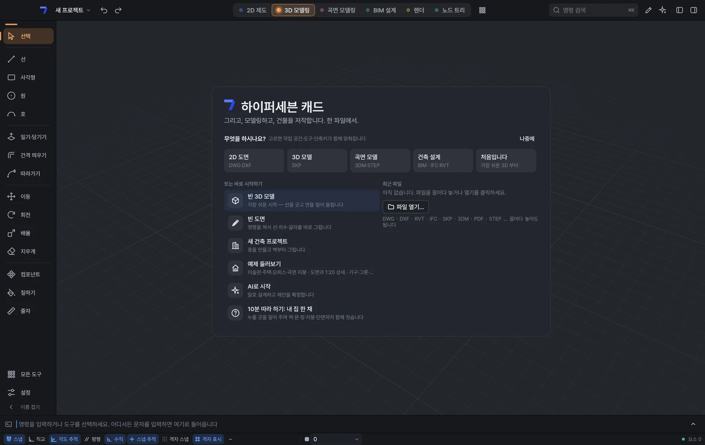
- 시작하기 — 빈 3D 모델, 빈 도면, 새 건축 프로젝트, 예제 둘러보기, AI로 시작 가운데 하나를 누릅니다. 10분 따라 하기: 내 집 한 채를 누르면 앱이 다음에 누를 곳을 짚어 주며 집 한 채를 함께 짓습니다(아래 따라 하기 ‘BIM으로 집 한 채 짓기’와 같은 걸음).
- 최근 파일 — 파일 열기…를 누르거나 파일을 창에 끌어다 놓습니다.
키·마우스 방식 고르기
단축키와 마우스 끌기는 네 가지 방식 가운데 하나를 씁니다. 에서 언제든 바꿉니다. 설정은 ⌘,(Ctrl+,)나 왼쪽 도구 줄 아래의 설정으로 엽니다.
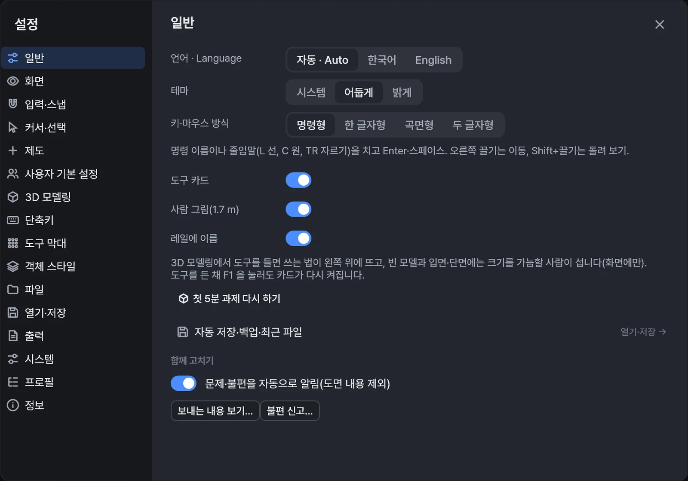
| 방식 | 도구를 드는 법 | 처음 물음의 답 |
|---|---|---|
| 명령형 | 명령 이름이나 줄임말(L 선, C 원, TR 자르기)을 치고 Enter 나 Space | 2D 도면 |
| 한 글자형 | 글자 하나로 곧장(L 선, R 사각형, P 밀기·당기기). Space 는 고르기 | 3D 모델 · 처음입니다 |
| 곡면형 | 명령 이름을 치고 Enter 나 Space. 곡면 명령의 줄임말이 먼저 | 곡면 모델 |
| 두 글자형 | 두 글자로 곧장(WA 벽, DR 문, WN 창) | 건축 설계 |
어느 방식에서나 ⌘K(Ctrl+K) 찾기와 한국어 명령 이름은 그대로 됩니다. 손에 익은 키를 하나씩 바꾸려면 를 엽니다.
쓰던 파일 열기
파일을 창에 끌어다 놓거나 (⌘O, 윈도우 Ctrl+O)로 엽니다. DWG · DXF · SKP · 3DM · RVT · IFC · PDF 를 바로 엽니다.
- 다른 형식의 파일을 열면 무엇을 읽었는지 카드 한 장으로 알려 주고, 파일 형식에 맞는 작업 공간으로 열립니다.
- PDF 는 선 · 채움 · 글자로 들어옵니다. 종이 크기 그대로 들어오니 배율로 실제 크기에 맞춥니다.
- 예제는 시작 화면의 예제 둘러보기나 에서 고르면 새 문서로 열립니다.
저장
⌘S(Ctrl+S)로 저장합니다. 처음 저장할 때 이름을 정하고, 문서는 설계 소스(.sdz) 한 파일에 담깁니다. 2D 도면, 3D 모델, 건물 모델, 시트가 모두 그 안에 있습니다.
- 다른 형식으로 넘길 때는 (⇧⌘S, 윈도우 Ctrl+Shift+S)이나 (⇧⌘E, 윈도우 Ctrl+Shift+E)를 씁니다.
- 인쇄와 PDF 는 (⌘P, 윈도우 Ctrl+P) 창 하나에서 합니다.
- 저장은 문서 폴더에서 시작하고, 이미 있는 파일은 덮어쓸지 한 번 묻습니다.
새 버전이 나오면 앱이 알려 줍니다.
화면 둘러보기
위에서부터 위 막대, 가운데의 도구 줄 · 탐색기 · 캔버스 · 검사기, 아래의 명령줄과 상태 표시줄이 차례로 있습니다.
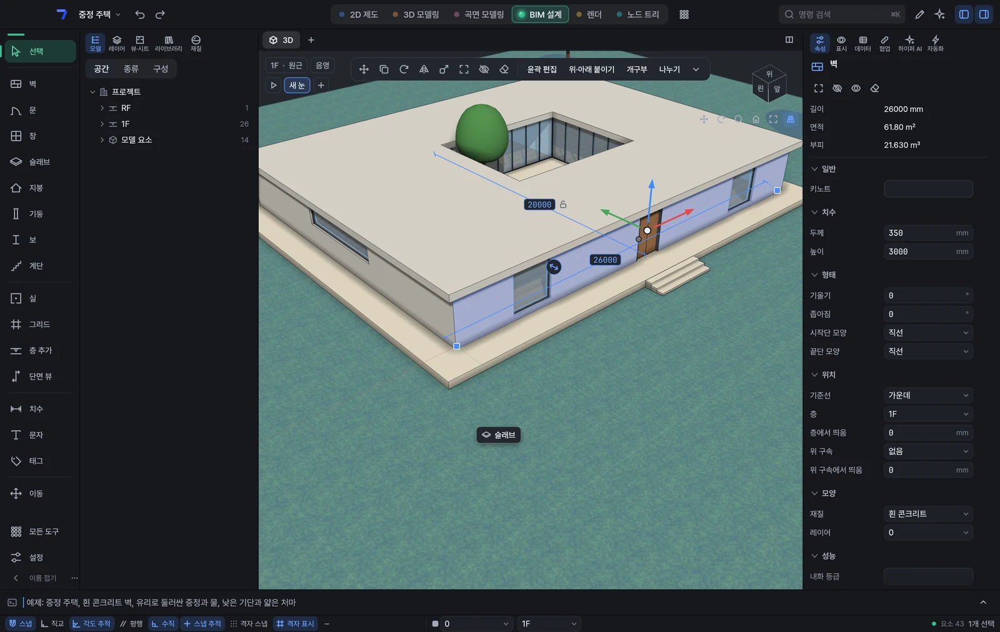
- 위 막대 — 왼쪽에 문서 이름과 되돌리기 · 다시, 가운데에 작업 공간 여섯(2D 제도 · 3D 모델링 · 곡면 모델링 · BIM 설계 · 렌더 · 노드 트리 — 창이 좁으면 2D · 3D · 곡면 · BIM · 렌더 · 노드로 짧게), 오른쪽에 명령 검색과 AI 단추, 양쪽 판을 접는 단추가 있습니다. 응원은 도움말 › 응원하기…에 있습니다.
- 작업 공간 — 따로 도는 프로그램이 아니라 도구 묶음입니다. 모델은 하나이고, 어디서 만들든 같은 모델에 쌓입니다. 작업 공간 옆의 격자 단추는 모든 도구를 한 창에 보여 줍니다.
- 도구 줄 — 왼쪽에 지금 작업 공간의 도구가 이름과 함께 있습니다. 맨 아래 이름 접기를 누르면 아이콘만 남고, 모든 도구와 설정이 그 위에 있습니다.
- 탐색기 — 도구 줄 옆에서 모델을 공간 · 종류 · 구성으로 보여 줍니다. 위의 아이콘 탭(아래에 이름이 함께 보입니다)으로 레이어 · 뷰·시트 · 라이브러리 · 재질로 바꿉니다.
- 뷰 탭 — 캔버스 위에 3D · 평면 · 단면 · 시트가 탭으로 열립니다. 옆의 + 로 새 뷰를 엽니다.
- 검사기 — 오른쪽에 고른 것의 값이 나옵니다. 아무것도 고르지 않으면 맨 위에 다음 할 일이 나옵니다. 평면에서는 벽 그리기 · 문 넣기 · 창 넣기 · 단면 만들기 · 이 뷰를 PDF 로 · 도면 세트 만들기를 한 번에 누르고, 지금 뷰와 문서의 설정은 그 아래 뷰 설정에 접혀 있습니다.
- 명령줄 — 화면 아래 한 줄입니다. 어디서든 글자를 치면 여기로 들어가고, 명령이 묻는 말과 옵션이 여기에 보입니다. 명령 이름은 한글(벽 · 문 · 창 · 치수)로 쳐도 Enter 로 돕니다.
- 상태 표시줄 — 맨 아래에 스냅 · 직교 같은 그리기 도움 단추와 좌표, 지금 레이어와 층, 요소 수가 있습니다.
빈 문서는 양쪽 판을 접은 넓은 캔버스로 시작합니다. 무언가를 그리면 탐색기가, 고르면 검사기가 열립니다. 창 폭이 1440 이하인 노트북에서는 탐색기를 접은 채로 시작합니다(위 막대의 탐색기 단추로 엽니다). ⌘0(Ctrl+0)을 누르면 틀을 모두 숨기고 캔버스만 봅니다.
명령 찾기 — ⌘K
⌘K(Ctrl+K)나 위 막대의 명령 검색을 누르고 아는 이름을 칩니다. 한국어 · 영문 · 초성 · 줄임말로 찾고, Enter 를 누르면 그 명령이 시작됩니다. 모든 명령에 무엇을 하는지 한 줄과 분류가 함께 보입니다.
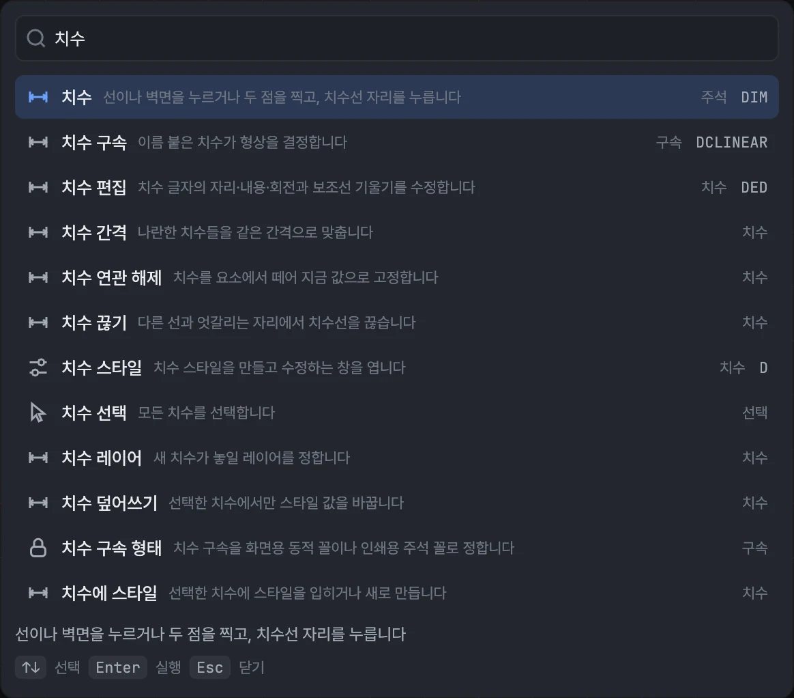
PDF 로 내기 — 이 뷰를 PDF 로
이 뷰를 PDF 로는 종이와 축척만 묻고, 지금 보는 평면 · 단면 · 입면 · 3D 를 시트에 놓아 PDF 로 냅니다. 만든 시트는 되돌리기 한 번에 사라지고, 같은 뷰로 다시 내면 앞의 시트를 고칩니다. 같은 창에서 도면 세트를 고르면 층마다 평면, 입면 넷, 단면을 같은 축척으로 한 장씩 놓아 PDF 하나로 냅니다. 다음 할 일, 출력 창 맨 위, 파일 메뉴, ⌘K 에서 부릅니다.
지금 명령의 쓰는 법 — F1
명령이 도는 동안 F1 을 누르면 명령 도움말 창의 현재 명령 칸에 그 명령의 쓰는 법 세 줄과 지금 묻는 말, 고를 수 있는 옵션이 나옵니다. 도구 단추에 포인터를 올리면 무엇을 하는지 한 줄이 뜹니다.
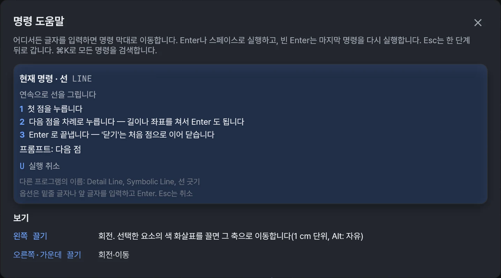
따라 하기
네 가지 길을 처음부터 끝까지 따라 합니다. 2D 만으로, 3D 부터, BIM 부터, 섞어서 — 어느 길로 시작해도 같은 파일에서 이어집니다. 그림은 모두 앱의 실제 화면입니다.
2D 도면 한 장 그리기
8 × 6 m 방 하나를 그리고, 치수와 글자를 넣어 출력 창까지 갑니다. 명령 이름을 치고 Enter 를 누르는 방식입니다.
시작 화면의 ‘무엇을 하시나요?’에서 2D 도면을 고르고, 맨 위의 빈 도면을 누릅니다. 단축키가 명령형으로 맞춰지고 2D 제도 화면이 열립니다.
REC 를 치고 Enter 를 누릅니다. 첫 구석으로 0,0 을 치고 Enter, 맞은편 구석으로 @8000,6000 을 치고 Enter 를 누르면 가로 8000 · 세로 6000 mm 사각형이 그려집니다. 치는 글자는 화면 아래 명령줄에 들어갑니다.
O 를 치고 Enter, 띄울 거리 200 을 치고 Enter 를 누릅니다. 사각형을 누르고 그 안쪽을 한 번 더 누르면 200 mm 안쪽에 나란한 사각형이 생깁니다. Enter 로 끝냅니다.
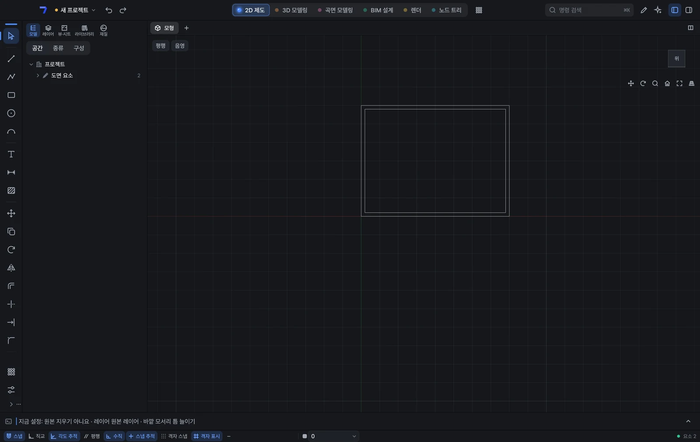
DLI 를 치고 Enter 를 누릅니다. 아래 변의 왼쪽 끝과 오른쪽 끝을 차례로 누르고, 치수선이 놓일 자리를 누릅니다. DLI 를 한 번 더 불러 오른쪽 변의 아래 끝과 위 끝을 누르면 세로 치수가 들어갑니다.
DT 를 치고 Enter, 글자가 놓일 자리를 누릅니다. 높이 300 을 치고 Enter, 회전 각도는 Enter 로 넘어갑니다. 거실 을 치고 Enter 를 두 번 누르면 글자가 놓입니다.
Z 를 치고 Enter, E 를 치고 Enter 를 누르면 그린 것 전체가 화면에 맞춰집니다.
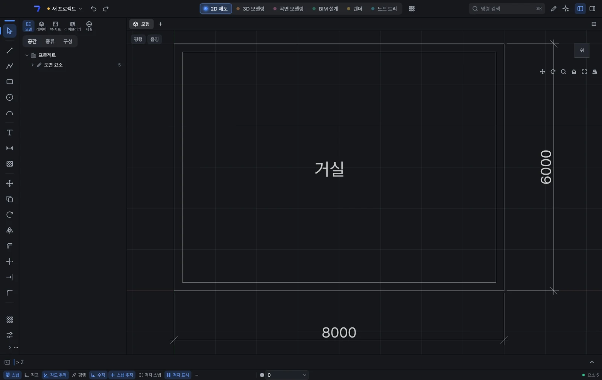
⌘P(Ctrl+P)를 누르면 출력 창이 열립니다. 가운데 미리보기는 실제 PDF 와 같은 그림이고, 오른쪽에서 보낼 곳 · 범위 · 종이와 축척 · 선과 색을 차례로 고릅니다.
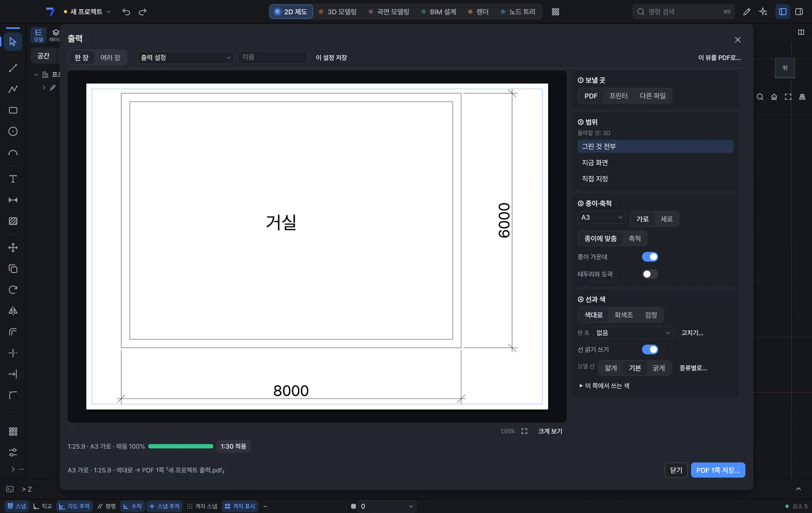
| 여기서 쓴 명령 | 쓰는 법 |
|---|---|
| 사각형 REC | 첫 구석을 누릅니다 → 맞은편 구석을 누르면 사각형이 그려집니다 → 크기를 정하려면 구석 대신 @가로,세로 를 치고 Enter 를 누릅니다 |
| 간격 띄우기 O | 띄울 거리를 치고 Enter 를 누릅니다 → 띄울 객체를 누르고, 띄울 쪽을 누릅니다 → 다른 객체로 되풀이하다가 Enter 로 끝냅니다 |
| 수평·수직 치수 DLI | 잴 첫 점을 누릅니다 → 둘째 점을 누릅니다 → 치수선이 놓일 자리를 누릅니다 |
| 글자 DT | 글자의 시작점을 누릅니다 → 높이와 회전 각도를 치거나 Enter 로 넘어갑니다 → 글자를 치고 Enter, 빈 줄에서 Enter 를 한 번 더 누릅니다 |
- 명령은 한국어 이름으로 쳐도 됩니다. 사각형, 치수 처럼 치고 Enter 를 누릅니다.
- 명령이 도는 동안 F1 을 누르면 그 명령의 쓰는 법 세 줄이 보입니다.
- 치수는 mm·소수 없음이 기본입니다. 그린 치수를 고르면 오른쪽 검사기의 치수 단위에서 0.0 · 0.00(소수 둘째 자리까지), ft-in(피트·인치), in(인치)을 고를 수 있고, 문서의 치수가 모두 바뀌며 ⌘Z 한 번으로 돌아갑니다.
- 저장은 ⌘S(Ctrl+S)입니다. 다른 형식으로 넘길 때는 이나 를 씁니다.
3D 모델 만들기
사각형을 그리고 밀어 올려 8 × 6 × 4 m 상자를 만든 뒤, 가운데를 뚫고 재질을 입힙니다. 글자 하나로 도구를 드는 방식입니다.
시작 화면의 ‘무엇을 하시나요?’에서 3D 모델을 고르고, 맨 위의 빈 3D 모델을 누릅니다. 단축키가 한 글자형으로 맞춰지고 3D 모델링 화면이 열립니다.
R 을 누르고 바닥의 원점을 누릅니다. 8000,6000 을 치고 Enter 를 누르면 가로 8 m · 세로 6 m 면이 생깁니다.
P 를 누르고 그 면을 누른 뒤 포인터를 위로 조금 올립니다. 4000 을 치고 Enter 를 누르면 면이 4 m 올라가 상자가 됩니다. Space 를 누르면 선택 도구로 돌아갑니다.
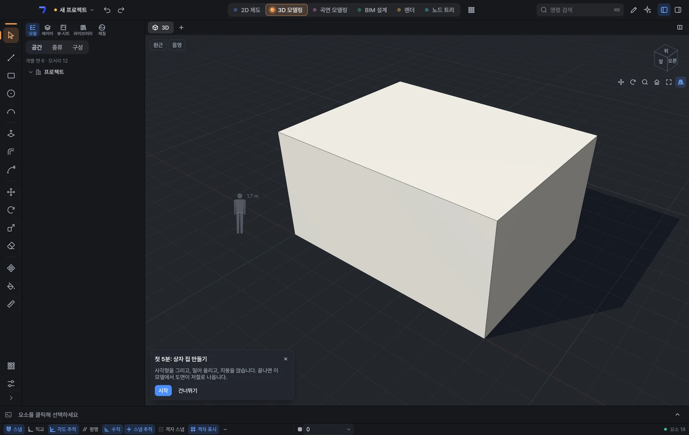
R 을 누르고 윗면 위의 한 점을 누른 뒤 4000,2000 을 치고 Enter 를 누릅니다. P 를 누르고 방금 그린 면을 누른 뒤 포인터를 아래로 내려 4000 을 치고 Enter 를 누르면, 바닥까지 밀려 구멍이 뚫립니다. Space 로 도구를 놓습니다.
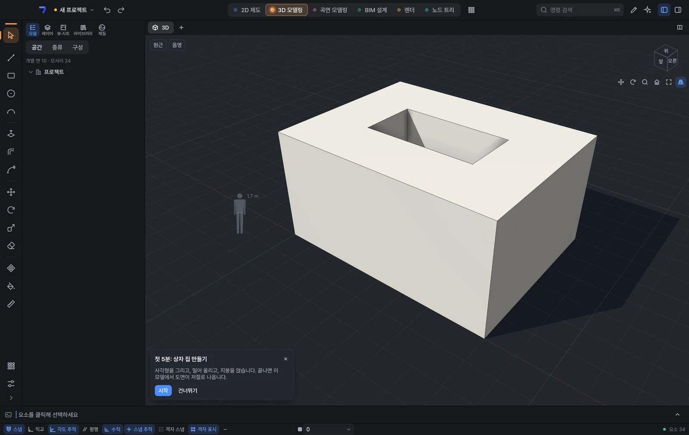
상자의 면을 빠르게 세 번 누르면 이어진 면과 모서리가 모두 골라집니다. ⌘K(Ctrl+K)를 누르고 그룹 만들기 를 친 뒤 Enter 를 누르면 한 덩어리로 묶입니다.
Space 를 누른 뒤 B 를 누르면 왼쪽에 재질 판이 열립니다. 벽돌을 고르고 상자의 앞면을 누르면 재질이 입혀집니다. Space 로 끝냅니다.
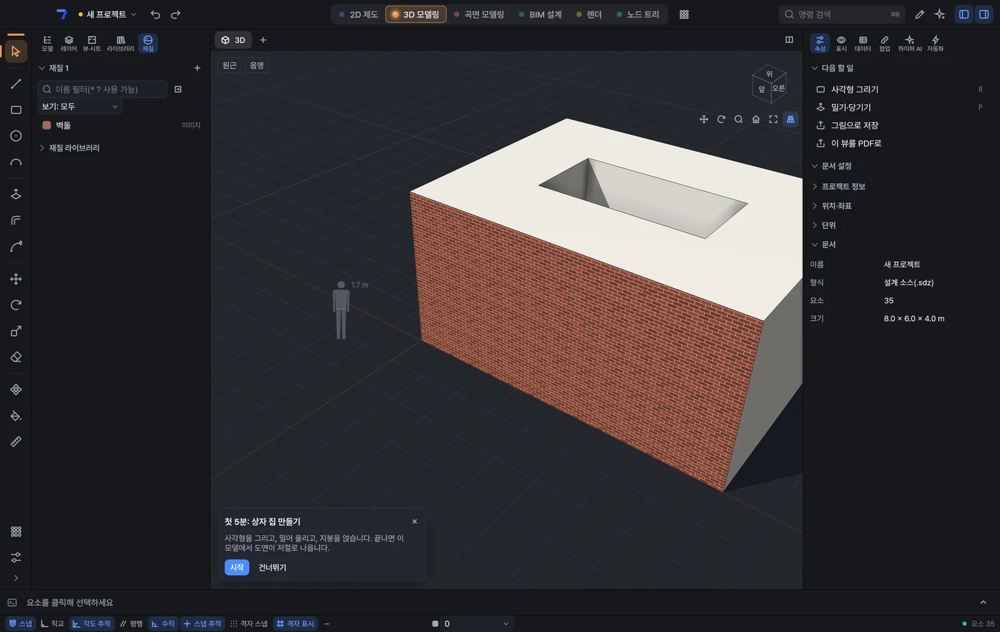
| 여기서 쓴 명령 | 쓰는 법 |
|---|---|
| 사각형 R | 첫 구석을 누릅니다 → 맞은편 구석을 누릅니다 — 가로,세로 를 쳐서 Enter 도 됩니다 → 닫힌 사각형은 바로 면이 됩니다 |
| 밀기·당기기 P | 밀거나 당길 면을 누릅니다 → 움직여 누르거나 거리를 치고 Enter 를 누릅니다 → 곧바로 거리를 다시 치면 방금 값이 고쳐집니다 |
| 그룹 만들기 | 묶을 형상을 고릅니다 → 명령을 부르면 고른 것이 그룹이 됩니다 → 그룹을 두 번 누르면 안으로 들어가 고칩니다 |
- 그룹을 두 번 누르면 안으로 들어가 고치고, Esc 로 나옵니다.
- 돌려 보기는 오른쪽 단추로 끌고, 옮겨 보기는 Shift 를 누른 채 오른쪽 단추로 끕니다. 굴리면 포인터 자리로 확대·축소됩니다.
- 방금 한 일은 ⌘Z(Ctrl+Z)로 되돌립니다.
BIM으로 집 한 채 짓기
벽 · 문 · 창 · 바닥 · 지붕 · 실을 차례로 놓아 8 × 6 m 집을 짓고, 단면을 그어 엽니다. 두 글자로 도구를 드는 방식입니다.
시작 화면의 ‘무엇을 하시나요?’에서 건축 설계를 고르고, 맨 위의 새 건축 프로젝트를 누릅니다. 층(1F · 2F)이 만들어지고 1F 평면 탭이 열립니다.
WA 를 누르고 집의 네 구석을 차례로 누른 뒤, 처음 점을 다시 눌러 닫습니다. Esc 를 두 번 눌러 도구를 놓습니다.
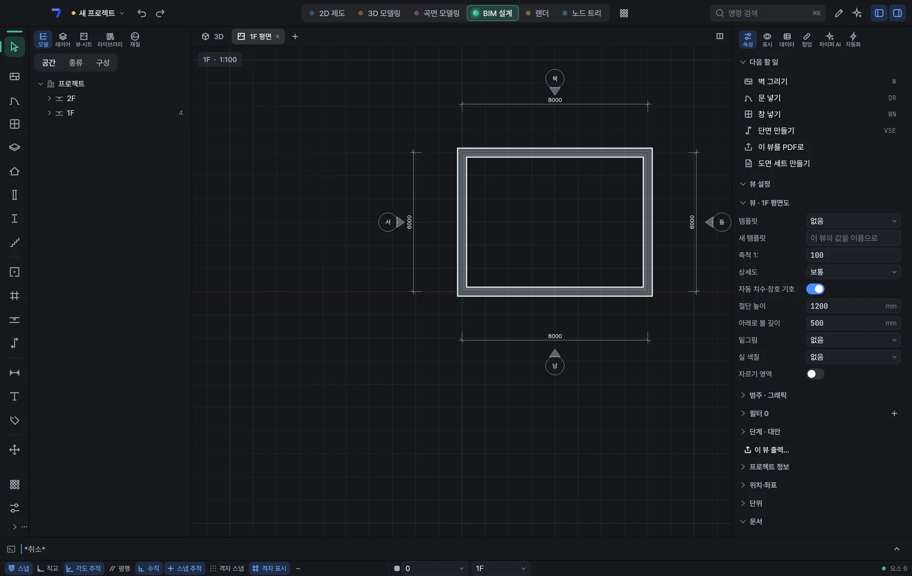
DR 을 누르고 아래쪽 벽 위를 누르면 문이 납니다. Esc 를 두 번 누른 뒤 WN 을 누르고 위쪽 벽을 두 곳 누르면 창이 둘 납니다. Esc 를 두 번 눌러 도구를 놓습니다.
FL 을 누르고 벽 바깥 네 구석을 차례로 누른 뒤 Enter 를 누르면 바닥이 생깁니다. Esc 를 누르고, RF 를 눌러 같은 네 구석을 누른 뒤 Enter 를 누르면 지붕이 벽 위에 얹힙니다. Esc 로 도구를 놓습니다.
RM 을 누르고 방 안쪽을 누르면 실이 생깁니다. Esc 를 두 번 눌러 도구를 놓습니다.
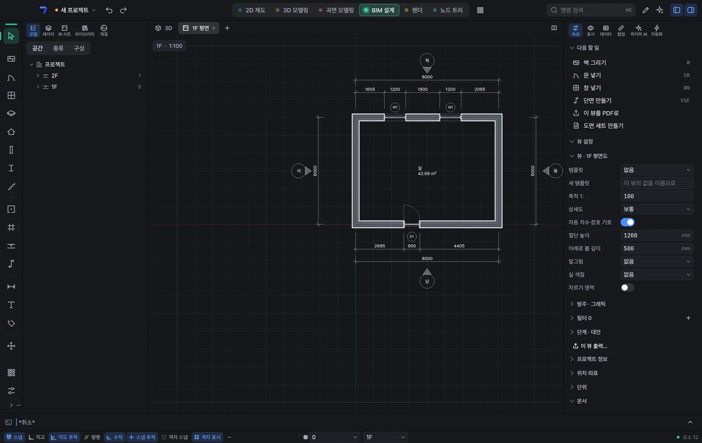
VSE 를 치고 Enter 를 누른 뒤, 집을 가로지르도록 왼쪽 바깥과 오른쪽 바깥을 차례로 눌러 단면선을 긋습니다. Esc 를 두 번 누르고 단면선을 두 번 누르면 단면 탭이 열립니다.
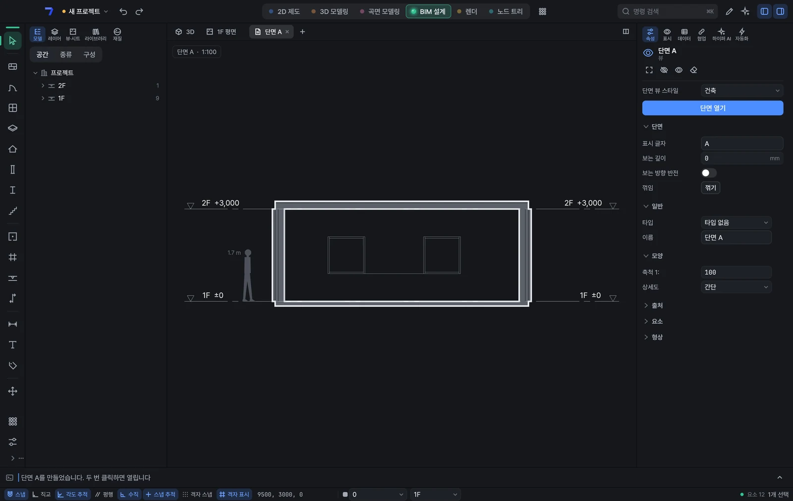
| 여기서 쓴 명령 | 쓰는 법 |
|---|---|
| 벽 WA | 벽의 시작점을 누릅니다 → 다음 점을 누릅니다 — 방향을 잡고 길이를 쳐도 됩니다 → 이어서 그리다가 Enter 로 끝냅니다 |
| 문 DR | 문을 낼 벽 위의 자리를 누릅니다 → 다른 자리도 잇달아 누릅니다 → Enter 로 끝냅니다 |
| 창 WN | 창을 낼 벽 위의 자리를 누릅니다 → 다른 자리도 잇달아 누릅니다 → Enter 로 끝냅니다 |
| 슬래브 FL | '벽 외곽' 옵션을 고르면 벽을 따라 바로 생깁니다 → 직접 그리려면 윤곽의 점을 누르고 첫 점을 다시 누릅니다 → Enter 를 누르면 슬래브가 생깁니다 |
| 지붕 RF | '벽 외곽' 옵션을 고르면 벽을 따라 바로 생깁니다 → 직접 그리려면 윤곽의 점을 누르고 첫 점을 다시 누릅니다 → Enter 를 누르면 지붕이 생깁니다 |
| 실 RM | '이름' 옵션으로 실 이름을 정합니다 → 실이 될 칸의 안쪽을 누릅니다 — 면적이 함께 나옵니다 → Enter 로 끝냅니다 |
| 단면 뷰 VSE | 단면선의 시작점을 누릅니다 → 끝점을 누릅니다 — 보는 쪽은 옵션으로 바꿉니다 → 그은 단면선을 두 번 누르면 단면 뷰가 열립니다 |
- 뷰 탭 옆의 + 로 다른 층 평면 · 단면 · 입면 · 일람표를 탭으로 엽니다.
- 벽을 누르면 길이와 이웃까지의 거리가 숫자로 뜹니다. 숫자를 눌러 값을 치면 벽이 옮겨 가고 이어진 벽 · 실 · 치수가 따라옵니다.
- 도구는 왼쪽 도구 줄의 단추로도 듭니다. 이름을 모르면 ⌘K(Ctrl+K)에서 찾습니다.
3D 덩어리를 건물로 바꾸고 평면에 치수 넣기
3D 로 형태를 먼저 잡고, 그것을 벽 · 바닥 · 지붕으로 바꾼 뒤 평면에서 치수를 넣습니다. 모델은 하나이고, 어디서 만들든 같은 모델에 쌓입니다.
시작 화면의 ‘무엇을 하시나요?’에서 3D 모델을 고르고, 맨 위의 빈 3D 모델을 누릅니다.
R 을 누르고 바닥의 원점을 누른 뒤 8000,6000 을 치고 Enter 를 누릅니다. P 를 누르고 그 면을 누른 뒤 포인터를 위로 올려 6600 을 치고 Enter 를 누르면 두 층 높이의 덩어리가 됩니다. Space 로 도구를 놓습니다.
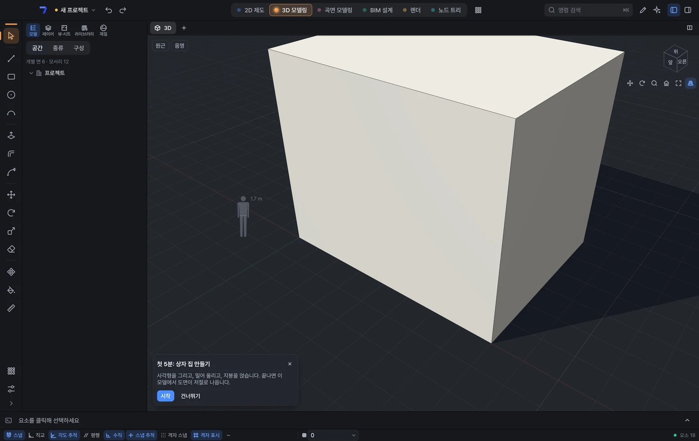
덩어리의 면을 빠르게 세 번 눌러 모두 고릅니다. ⌘K(Ctrl+K)를 누르고 BIM 으로 바꾸기 를 친 뒤 Enter 를 누릅니다. 층 높이를 물으면 Enter 로 권한 값 3300 을 받습니다. 층마다 벽과 바닥이, 맨 위에 지붕이 생깁니다. Space 로 선택 도구로 돌아갑니다.
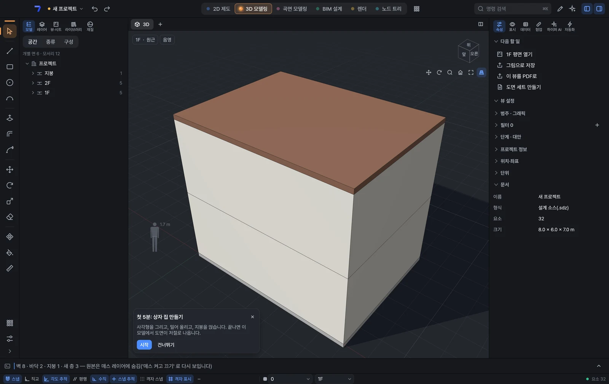
⌘K(Ctrl+K)를 누르고 평면 뷰 를 친 뒤 Enter 를 누르면 1F 평면 탭이 열립니다.
⌘K(Ctrl+K)를 누르고 치수 를 친 뒤 Enter 를 누릅니다. 아래쪽 벽의 바깥면을 누르고, 치수선이 놓일 자리를 누르면 8000 이 재어집니다. Esc 로 끝냅니다.
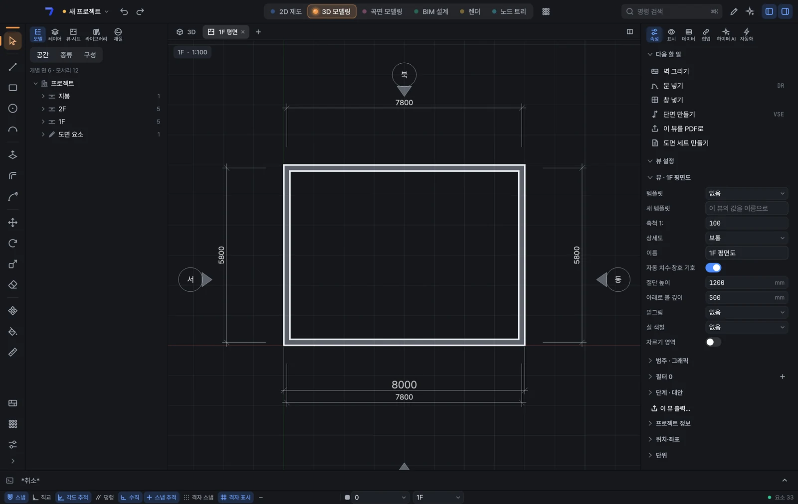
| 여기서 쓴 명령 | 쓰는 법 |
|---|---|
| 사각형 R | 첫 구석을 누릅니다 → 맞은편 구석을 누릅니다 — 가로,세로 를 쳐서 Enter 도 됩니다 → 닫힌 사각형은 바로 면이 됩니다 |
| 밀기·당기기 P | 밀거나 당길 면을 누릅니다 → 움직여 누르거나 거리를 치고 Enter 를 누릅니다 → 곧바로 거리를 다시 치면 방금 값이 고쳐집니다 |
| BIM 으로 바꾸기 | 바꿀 입체를 고르고 Enter 를 누릅니다 → 층 높이를 치고 Enter 를 누릅니다 — Enter 만 누르면 권한 값입니다 → 원본은 매스 레이어로 옮겨 숨깁니다 — '원본 남김'은 그대로 둡니다 |
| 치수 | 잴 선이나 벽면을 누릅니다 — 두 점을 차례로 눌러도 됩니다 → 치수선이 놓일 자리를 누릅니다 → 이어서 다른 곳을 재고 Enter 로 끝냅니다 |
- 바꾼 뒤 원래 덩어리는 매스 레이어에 숨겨 둡니다. ⌘K(Ctrl+K)에서 매스 켜고 끄기 로 다시 봅니다.
- 평면에 넣은 치수와 선은 그 뷰에만 속하고, 벽을 옮기면 벽면에 붙은 치수가 따라옵니다.
- 2D 로 시작해도 됩니다. 2D 도면 · 3D 모델 · 건물 모델은 한 파일 안에서 오갑니다.
하이퍼 AI 켜기
하이퍼 AI 는 모델을 읽고, 말로 시킨 일을 보라색 제안으로 냅니다. 로그인하고 내 Anthropic API 키를 연결하면 씁니다.
위 막대의 AI 단추를 누르면 오른쪽에 하이퍼 AI 창이 열립니다. 아래의 카카오 로그인, Apple로 로그인, Google 계정으로 로그인 가운데 하나로 로그인합니다.
로그인하기 전의 하이퍼 AI 창. 로그인하면 같은 자리에 키를 넣는 칸이 나옵니다. Anthropic 콘솔에서 만든 API 키(sk-ant- 로 시작)를 붙여 넣고 저장을 누릅니다. 키는 이 컴퓨터의 키체인에 저장되어 다음부터는 다시 넣지 않습니다.
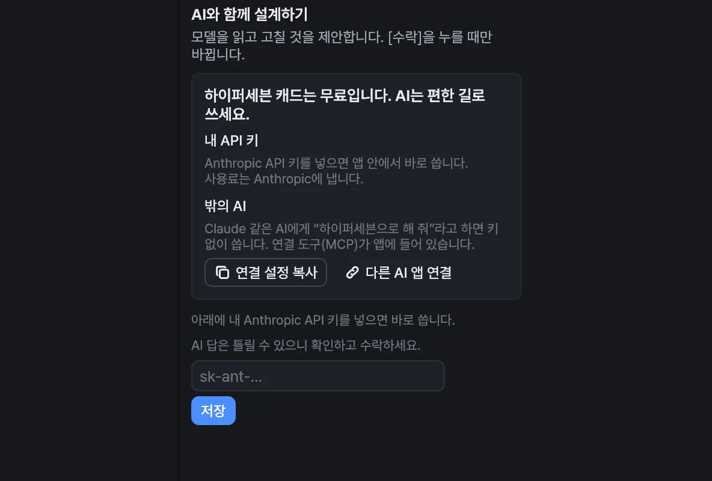
로그인한 뒤. 키 칸에 내 API 키를 넣습니다. 창 아래 칸에 할 일을 말로 적고 보내기를 누릅니다. AI 가 만든 것은 보라색 제안으로 화면에 놓이고, 캔버스 위 띠에 몇 개가 들어오는지와 점검 결과가 보입니다. 수락을 눌러야 모델이 바뀌고, 거부를 누르면 사라집니다.
예시 장면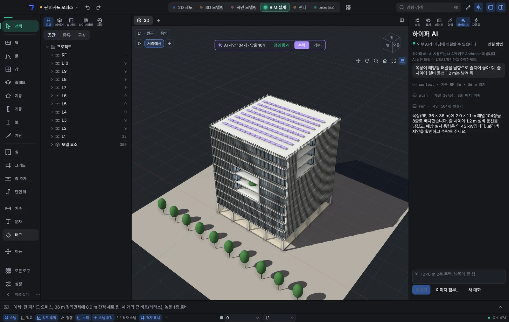
말로 시키면 결과가 보라색 제안으로 남습니다. 미리 짠 대화로 찍은 예시 장면입니다.
- 하이퍼 AI 연결은 무료입니다. AI 사용료는 내 API 키로 Anthropic에 냅니다.
- AI 답은 틀릴 수 있으니 확인하고 수락합니다.
- 로그인은 하이퍼세븐 오피스와 같은 계정을 씁니다.
AI 에이전트 연결 (MCP)
앱 안에 MCP 서버가 들어 있어 따로 설치할 것이 없습니다. Claude Code · Claude Desktop 같은 AI 에이전트를 붙이면, 에이전트가 열려 있는 문서를 읽고 함께 고칩니다.
붙이기
맥의 Claude Code 는 터미널에서 아래 한 줄을 한 번 실행합니다.
claude mcp add hyperseven-cad -- "/Applications/HyperSeven CAD.app/Contents/MacOS/supercad" mcp
- 윈도우 — 하이퍼 AI 창 위쪽의 연결 방법을 누르면 이 컴퓨터에 맞는 명령이 나옵니다. 복사로 복사해 터미널에 붙여 넣습니다.
- Claude Desktop — 같은 자리의 둘째 칸을 복사해 설정 ▸ 개발자 ▸ 설정 편집의
mcpServers에 넣고 다시 켭니다.
제안으로 남습니다
앱 창이 열려 있으면 에이전트는 사람이 보는 그 문서를 함께 고칩니다. 에이전트가 만든 것은 보라색 제안으로 남고, 사람이 수락하거나 거부합니다. 하이퍼 AI 창 위쪽의 초록 점은 바깥 AI 가 이 창에 붙을 수 있다는 표시입니다.
문제 알리기
쓰다가 잘못된 것을 보면 그 자리에서 알립니다. 개발팀이 읽고 다음 판에서 고칩니다.
- 를 누릅니다(⌘⇧F, 윈도우 Ctrl+Shift+F, 또는 ⌘K 에서 ‘문제 알리기’). 지금 화면이 함께 찍혀 창 안에 미리 보입니다.
- 한 칸에 무엇을 하다가 무엇이 잘못됐는지 적고 보내기를 누릅니다. 화면 그림을 보내고 싶지 않으면 체크를 끕니다. 답을 받고 싶으면 메일을 적습니다(선택).
- 신고 번호가 나옵니다. 인터넷이 없으면 이 컴퓨터에 모아 두었다가 다음에 앱을 열 때 보냅니다. 고치면 다음에 앱을 열 때 알려 드립니다.
판 · 운영체제 · 작업 공간 · 도구 · 최근 명령 · 마지막 메시지 · 오류가 함께 갑니다. 도면 파일은 보내지 않습니다. 오류와 막힌 순간을 도면 내용 없이 알리는 자동 알림은 에서 끌 수 있습니다.
단축키
아래는 어느 키·마우스 방식에서나 같은 키입니다. 맥 키를 먼저 적고 윈도우 키를 괄호에 적었습니다. 도구를 드는 글자는 방식마다 다르고, 키·마우스 방식 고르기에 있습니다.
| 기능 | 키 |
|---|---|
| 명령 찾기 | ⌘K (Ctrl+K) |
| 명령 도움말 | F1 |
| 새로 만들기 · 열기 | ⌘N · ⌘O (Ctrl+N · Ctrl+O) |
| 저장 · 다른 이름으로 저장 | ⌘S · ⇧⌘S (Ctrl+S · Ctrl+Shift+S) |
| 내보내기 · 출력 | ⇧⌘E · ⌘P (Ctrl+Shift+E · Ctrl+P) |
| 되돌리기 | ⌘Z (Ctrl+Z) |
| 탭 닫기 | ⌘W (Ctrl+W) |
| 설정 | ⌘, (Ctrl+,) |
| 집중 모드 | ⌘0 (Ctrl+0) |
| 불편 신고 | ⌘⇧F (Ctrl+Shift+F) |
| 확정 · 한 단계 뒤로 | Enter · Esc |
| 기준 축에 묶기(선 · 이동 · 복사) · 3D 에서 회전축 고르기 | → X · ← Y · ↑ Z(3D) · ↓ 풀기 |
마우스와 트랙패드
| 손 | 하는 일 |
|---|---|
| 굴리기 (휠 · 트랙패드 두 손가락) | 포인터 자리로 확대 · 축소 |
| 오른쪽 끌기 | 명령형 · 두 글자형은 이동, 한 글자형 · 곡면형은 돌려 보기 |
| Shift + 오른쪽 끌기 | 명령형 · 두 글자형은 돌려 보기, 한 글자형 · 곡면형은 이동 |
| 빈 곳 왼쪽 끌기 | 상자로 고르기 — 왼쪽에서 오른쪽은 안에 든 것만, 오른쪽에서 왼쪽은 걸친 것까지 |
이어서 나올 것
명령마다의 쓰는 법을 모은 명령 찾아보기와 도면 세트 · 출력 · 파일 주고받기를 다루는 긴 글이 이어서 나옵니다. 그때까지는 쓰는 중에 F1, 이름을 모르면 ⌘K(Ctrl+K)가 가장 빠릅니다. 기능 소개는 캐드 쪽에 있습니다.